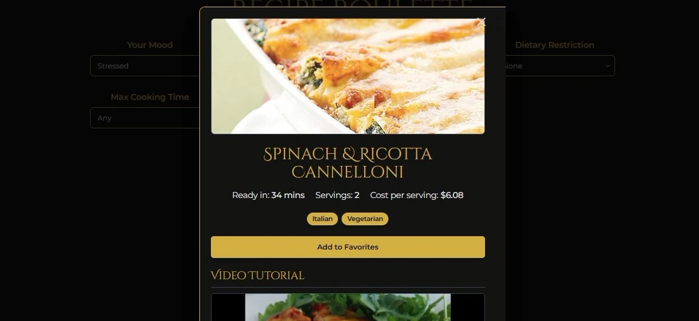
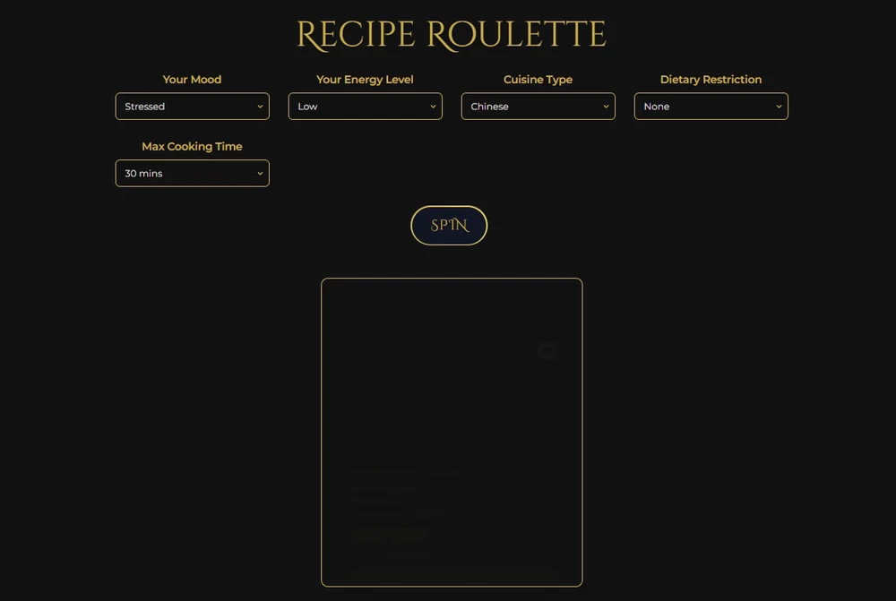
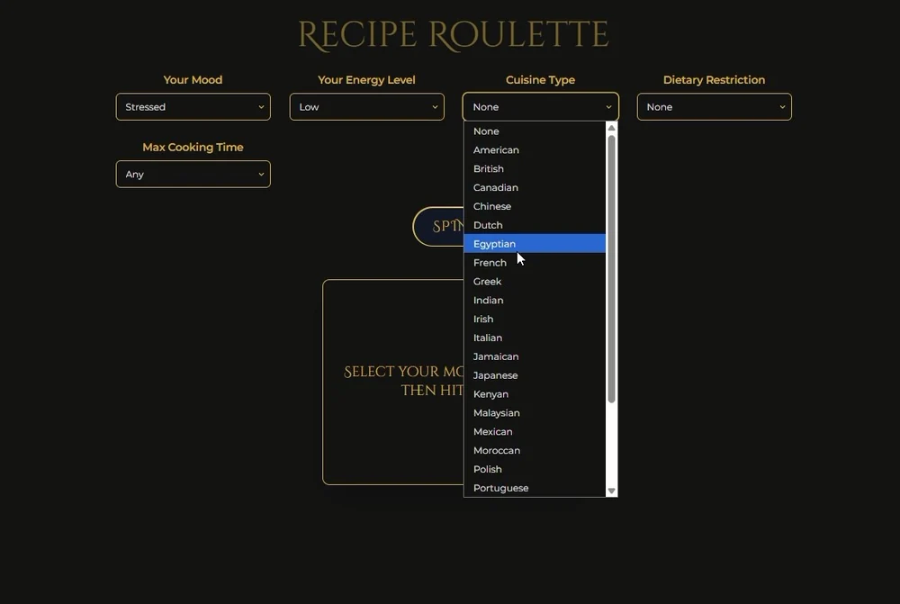
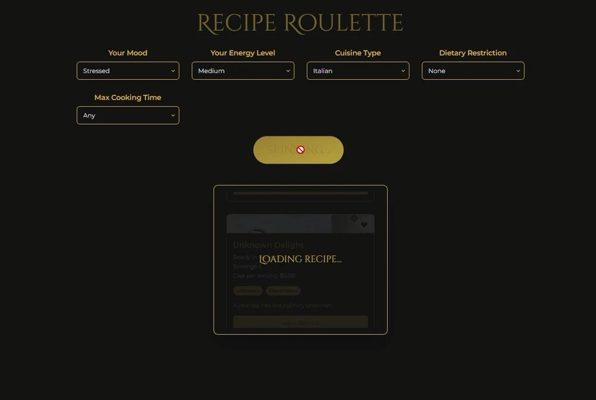
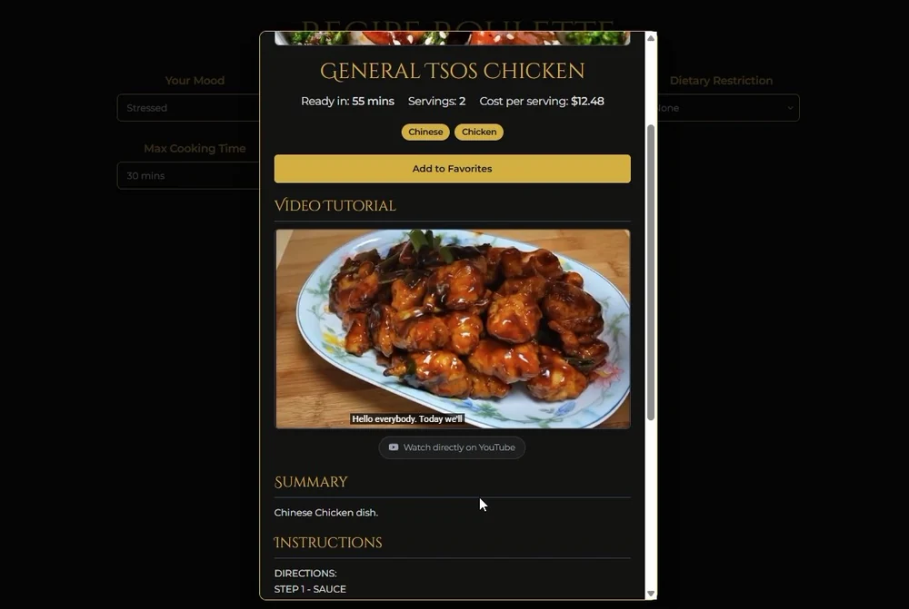
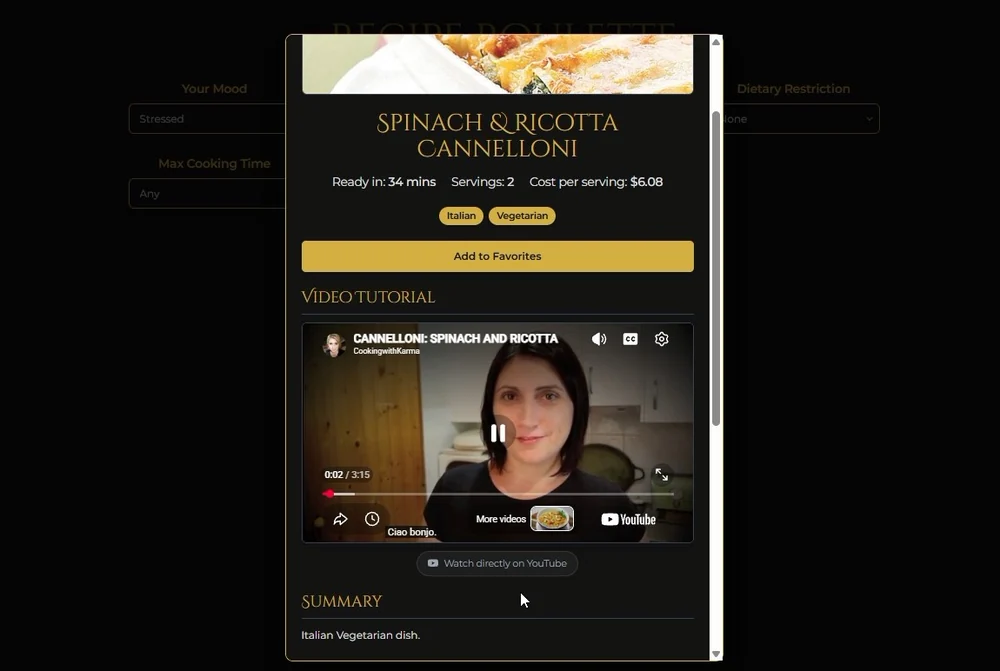

Apps & Games
Recipe Roulette
The problem is never cooking — it is deciding. Five dropdowns: how you feel, how much energy you have, what cuisine, what you can eat, how long you are willing to stand there. Then one gold SPIN button, and a recipe comes back.
Overview
Recipe Roulette is a single dark screen with a serif gold title and five selects. It takes the two things that actually decide dinner — mood and energy — seriously enough to put them first. A comfort-seeking mood at low energy is a different request from an adventurous mood at high energy, and the app treats it that way.
What comes back is not a link. It is a full card: a photograph, the dish name, ready-in time, servings, cost per serving, diet and cuisine tags, a favourites button, an embedded video tutorial, a summary and numbered instructions — with a link out to the full recipe underneath.
The spin
Two minutes, start to finish — the dropdowns, the SPIN, the loading state, and the card that arrives with a video already matched to the dish.
What's in it
- Eight moods — happy, sad, stressed, relaxed, energetic, tired, adventurous, comfort-seeking. The first question is how the day went, not what is in the fridge.
- Five energy levels — from very low to very high, so a ten-minute assembly and a two-hour project are both on the table.
- A real cuisine list — American, British, Canadian, Chinese, Dutch, Egyptian, French, Greek, Indian, Irish, Italian, Jamaican, Japanese, Kenyan, Malaysian, Mexican, Moroccan, Polish, Portuguese and more, scrollable, with None at the top for the indecisive.
- Dietary filters — halal, vegetarian, vegan, or none.
- A time cap — any, or 30 minutes and up.
- A loading state that tells the truth — SPINNING, then a skeleton card, then the result. No fake instant answer.
- Cost per serving — every card carries an estimate next to the timings, which is the number people actually argue about.
- A video tutorial on every recipe — embedded and playable in the card, with a direct YouTube link when the embed is blocked.
- Favourites — one button to keep a result before it disappears back into the roulette.
Gallery





Under the hood
At a glance
| Type | Recipe decision app |
|---|---|
| Platform | Browser — desktop layout |
| Input | Mood, energy, cuisine, diet, max cooking time |
| Output | Recipe card — photo, timings, servings, cost, tags, instructions |
| Video | Embedded tutorial per recipe, with a YouTube fallback link |
| Look | Near-black, gold serif, one accent |
| Status | Working build |